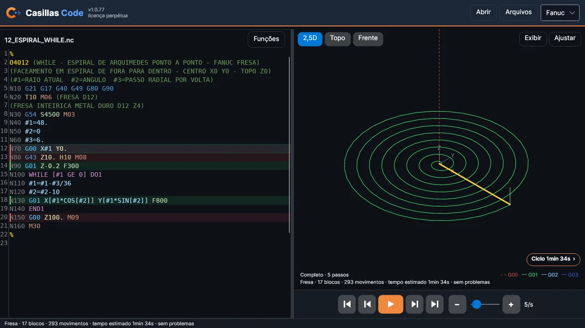
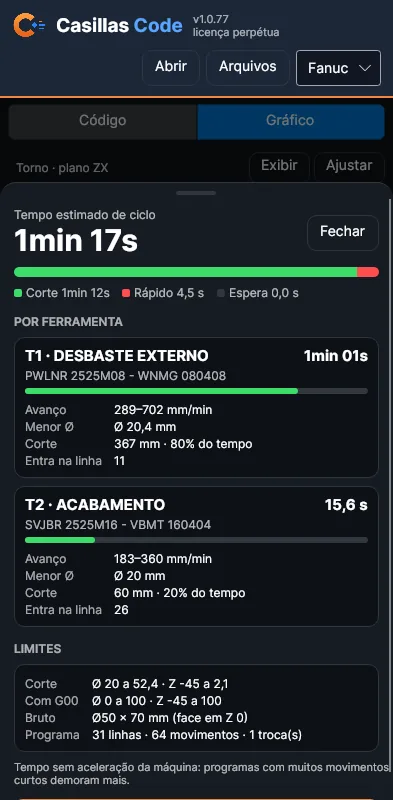
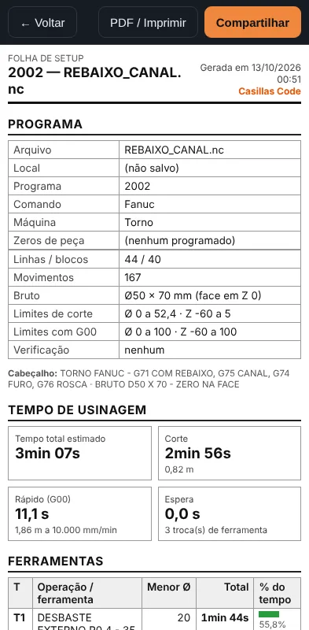
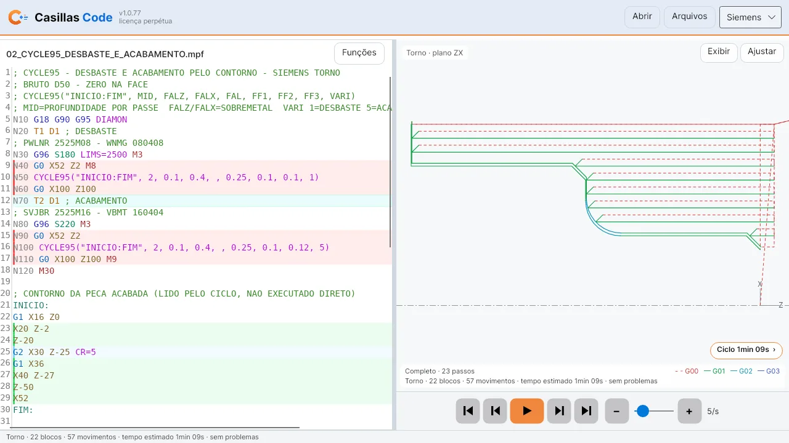

Escreva, confira e simule seus programas antes de ir para a máquina. Veja cada passe dos ciclos, encontre erros de código e gere a folha de setup em PDF — direto no navegador, até sem internet.
Sem cartão de crédito. Crie a conta com seu e-mail e use tudo por 30 dias.
Feito para quem programa e opera torno e centro de usinagem no dia a dia.
Códigos G e M coloridos, linha com erro sublinhada e a máquina avisa onde pararia com alarme. Renumerar e remover a numeração com um toque.
Veja cada passe de G71, G72, G73, G76, CYCLE95… avançando ou voltando um a um, com a ferramenta e o percurso à frente.
Torno no plano ZX com diâmetro; fresa em vista 2,5D, de topo e de frente. Zoom com os dedos e toque na trajetória para ir à linha.
Tempo de ciclo por ferramenta, separado em corte, rápido e espera, com avanços, menor diâmetro e limites de curso.
Ferramentas com operação e código do inserto, tempos, bruto, limites e desenho da trajetória. Compartilhe pelo WhatsApp ou imprima.
Instale no celular ou no computador. Biblioteca de programas com pastas, importar, salvar e compartilhar. Modo claro para a oficina.
Telas reais do app, com os exemplos que já vêm junto (mais de 40 programas, um por ciclo).




Simples e direto, com pagamento por Pix.
Abra o app, toque em "Criar conta" e use tudo grátis por 30 dias.
Diga o e-mail da conta e o plano que prefere. Respondemos com o valor.
Envie o comprovante na mesma conversa.
A licença é ativada na sua conta, normalmente no mesmo dia útil.
Não. O Casillas Code abre no navegador (Chrome, Edge, Safari) do celular ou do computador. Se quiser, toque em "Instalar" para ter o ícone na tela inicial e abrir como um app.
Sim. Depois de aberto uma vez, o app funciona sem internet, e a licença vale por até 7 dias sem conexão. A internet só é necessária para entrar na conta e confirmar a licença de tempos em tempos.
Em até 2 aparelhos ao mesmo tempo (por exemplo, o celular e o computador da oficina). Para trocar, use "Sair da conta" no aparelho antigo. Precisa de mais? Fale com a gente.
Fanuc e Siemens (Sinumerik), torno e fresa/centro de usinagem, com os ciclos fixos, subprogramas, macros e laços mais usados. O app reconhece sozinho se o programa é de torno ou de fresa.
No seu aparelho, na biblioteca do app. Eles não são enviados para nossos servidores. Você pode importar, organizar em pastas, salvar e compartilhar quando quiser.
O app continua abrindo e você pode editar o programa. Simular, salvar e exportar precisam de licença; Macro, Otimizador e CAM ficam bloqueados; e o módulo 1 da Academy continua aberto.
Não. A simulação ajuda muito a encontrar erros, mas é uma aproximação: não conhece sua máquina, ferramentas e fixações. Sempre confira o programa na máquina com teste em vazio, bloco a bloco e avanço reduzido.
Ao usar o Casillas Code você concorda com os Termos de uso e a Política de privacidade.